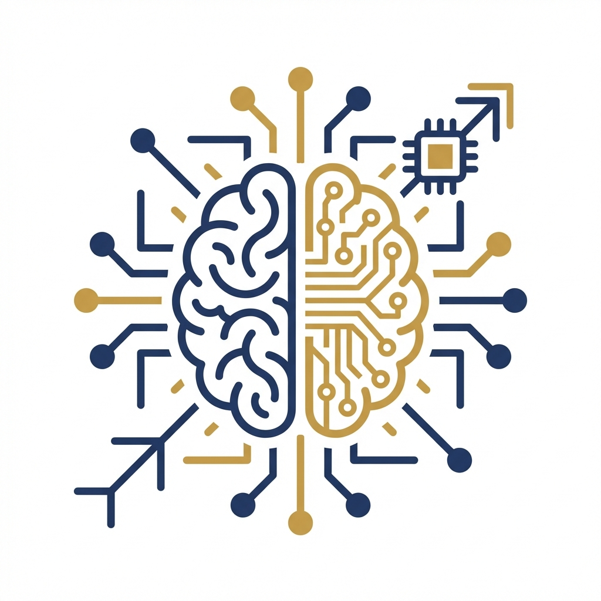

Introduction to Artificial Intelligence
Course: Computer Systems Engineering
Module: Artificial Intelligence (EIARI4A)
Topic: History, Domains & Applications
Reading Time: ~15 Minutes
By the end of this chapter, you will be able to:
1. Define what Artificial Intelligence is and understand the "AI Effect"
2. Differentiate between ANI, AGI, and ASI capability levels
3. Trace the history of AI from Dartmouth (1956) to the Deep Learning era
4. Compare the three schools of thought: Symbolism, Connectionism, and Behaviorism
5. Identify the four key AI domains: ML, DL, NLP, and Robotics
6. Understand the AI ecosystem (Data, Algorithms, Computing Power, Scenarios)
7. Discuss the ethical implications and societal impact of AI from Day 1
Welcome to AI2026! This week, we strip away the hype and define what "Artificial Intelligence" actually is. We will explore its history, the three major "Schools of Thought," and the key domains that make up the modern AI landscape.
1. Defining Artificial Intelligence
Artificial Intelligence (AI) is the branch of computer science dedicated to creating systems capable of performing tasks that typically require human intelligence. These tasks include recognizing speech, making decisions, translating languages, and identifying patterns.
1.1 The "AI Effect"
A fascinating and persistent phenomenon in the field is known as the "AI Effect." This describes the tendency for people to discount advancements in Artificial Intelligence as soon as they become practical and understood. In the 1980s, a computer capable of playing chess was considered the pinnacle of AI; today, we often dismiss it as mere "brute-force search." Similarly, Optical Character Recognition (OCR) was once viewed as magic in the 1990s, but now it is standard software included in every smartphone. As the axiom goes, "AI is whatever has not been done yet." This constant moving of the goalposts means that AI researchers are perpetually chasing a definition that evolves with their own success.
1.2 The Hierarchy of Intelligence
We categorize AI capabilities into three distinct levels of evolution. Currently, humanity is entirely within the realm of Artificial Narrow Intelligence (ANI). These are systems that excel at a single, specific task—whether that is DeepBlue playing chess, Google Maps optimizing a route, or ChatGPT determining the next likely word in a sentence. Despite their impressive performance, these systems lack consciousness and versatility.
The next theoretical step is Artificial General Intelligence (AGI), a system that would possess the ability to learn any intellectual task that a human can, including reasoning, planning, and creativity across diverse domains. The final stage is Artificial Super Intelligence (ASI), a hypothetical future where machines surpass human intellect in every possible field, from creativity to social skills, potentially solving problems that are currently beyond human comprehension.
2. A Brief History of AI
The field officially began at the Dartmouth Conference in 1956, where the term "Artificial Intelligence" was coined by John McCarthy.
Timeline
The history of AI is not a straight line of progress but a cyclical journey of hype and disappointment. It began with The Dawn & Golden Age (1956-1970s), often called the "Reasoning Period." Following the Dartmouth Conference, optimism reigned supreme. Researchers created programs like Logic Theorist that could prove mathematical theorems, leading to bold predictions that a machine would be "smarter than a man" within twenty years.
However, this optimism crashed into the Gloomy Period (1974-1980), known as the "First AI Winter." The early logic-based systems failed to handle the ambiguity and messiness of the real world. Funding dried up as promises were broken, and the field faced deep skepticism. AI returned in the 1980s (The Knowledge Period) in the form of "Expert Systems"—corporate software designed to capture specific human expertise using varying "if-then" rule engines. While useful, these systems were brittle and expensive to maintain.
We are currently living in The Prosperity Period (2010s-Present), or the "Learning Period." The convergence of massive datasets (Big Data), elastic Cloud Computing, and the parallel processing power of GPUs ignited the Deep Learning revolution. Unlike previous eras, modern systems learn from data rather than being told rules, enabling breakthroughs in vision, language, and creativity that were previously thought impossible.
3. The Three Schools of Thought
The quest for AI has followed three competing philosophies:
3.1 Symbolism (Logic)
"Thinking is Computing."
Symbolism, often referred to as "Good Old-Fashioned AI" (GOFAI), is built on the premise that human intelligence can be reduced to the manipulation of symbols according to explicit logical rules. In this view, the mind is essentially a physical symbol system. System designers explicitly program the knowledge and logic into the machine, using structures like If Bird(x) then Fly(x). This approach excels in domains requiring high-level reasoning, mathematical problem solving, and planning, such as chess or theorem proving. However, it struggles significantly with perception and learning from raw data; it is notoriously difficult to write a rigid set of logical rules to recognize a fuzzy concept like a "cat" because visual variations are too vast to capture with static logic.
3.2 Connectionism (Neural Networks)
"Thinking is Biological."
Connectionism connects intelligence not to symbols, but to biology. It posits that intelligence emerges from the parallel interaction of massive numbers of simple processing units, much like neurons in the human brain. Instead of being explicitly programmed with rules, these systems "learn" patterns from data by adjusting the connection strengths (weights) between neurons. This is the foundation of modern Deep Learning, including technologies like ChatGPT and Computer Vision systems. While Connectionism was historically sidelined due to a lack of computing power, it is today the dominant school of thought, unmatched in its ability to handle "messy" tasks like recognizing faces, understanding speech, and generating natural language.
3.3 Behaviorism (Evolution)
"Thinking is Action."
Behaviorism shifts the focus from internal processing (symbols or neurons) to external action. It defines intelligence as the ability of an agent to adapt its behavior to survive and thrive in a dynamic environment. This school is strongly influenced by evolutionary biology and control theory. It argues that an intelligent system does not necessarily need a complete internal model of the world; it simply needs to react correctly to stimuli to achieve its goals. This philosophy underpins the fields of Robotics and Reinforcement Learning, where agents like those from Boston Dynamics learn to walk, run, and backflip by interacting with the physical world rather than by reading a manual on physics.
4. Key AI Domains
Modern AI is not one thing; it is a collection of fields:
4.1 Machine Learning (ML)
Machine Learning is the subset of AI that focuses on the ability of computers to learn from data from experience without being explicitly programmed. In traditional programming, a human writes specific rules (if x > 5 output y). In Machine Learning, we feed the machine input data and the desired output, and the algorithm determines the rule that maps one to the other.
4.2 Deep Learning (DL)
Deep Learning is a specialized and powerful subset of Machine Learning inspired by the biological structure of the human brain. It uses multi-layered "Neural Networks" to learn hierarchical representations of data. While standard ML might learn to recognize a car by checking for wheels, Deep Learning learns by identifying lines, then curves, then shapes, and finally the concept of a car, making it exceptionally powerful for processing vast amounts of unstructured data like images and text.
4.3 Natural Language Processing (NLP)
Natural Language Processing is the field dedicated to the interaction between computers and human language. It bridges the gap between the binary world of machines and the nuanced, contextual world of human communication. Modern NLP powers technologies that can translate languages in real-time, analyze sentiment in social media, and generate human-like text via Large Language Models (LLMs) like GPT-4.
4.4 Robotics
Robotics is the physical manifestation of Artificial Intelligence. It involves the integration of AI control systems into physical machines that interact with the real world. A robot uses AI to perceive its environment through sensors (Computer Vision), plan a path or action, and actuate its motors to move. This field combines mechanical engineering with the most advanced behaviorist AI algorithms.
5. The AI Ecosystem
AI does not exist in a vacuum. It is the "brain" of a larger digital body. The textbook describes this relationship as an integrated layer cake of technologies:
5.1 The Four Elements of AI
For modern AI to function effectively, four critical pillars must be present. First is Data, the fuel of the system; without massive datasets, deep learning models cannot learn meaningful representations. Second are the Algorithms, the mathematical engines (such as CNNs or Transformers) that process this data. Third is Computing Power, the integrated circuits and specialized hardware required to execute the billions of matrix operations these algorithms demand. Finally, there must be Scenarios, specific real-world problems or use cases (like autonomous driving) that provide the context and goal for the intelligence.
5.2 The Relationship Triangle
The textbook conceptualizes the digital era as a relationship between three major forces. Cloud Computing acts as the body, providing the infinite storage and scalable compute resources needed to host massive models. Big Data serves as the memory, providing the raw material and training examples from every digital touchpoint. IoT (Internet of Things) functions as the nervous system or sensory network, collecting data from the edge and executing AI actions in the physical world. Together, they create an ecosystem where AI provides the "brain" that processes information collected by IoT, stored by Big Data, and powered by the Cloud.
6. AI Hardware: The Compute Layer
Traditional CPUs are great for sequential logic (running an OS), but they are terrible at AI. Deep Learning requires performing millions of simple multiplications in parallel. This need birthed the AI Processor.
6.1 CPU (Central Processing Unit)
The CPU is viewed as the "General Manager" of computing. Its architecture consists of a few, very powerful cores optimized for serial processing and complex logic control. While CPUs are excellent at running operating systems and handling sequential tasks, they are fundamentally inefficient for Deep Learning, which requires performing millions of simple mathematical operations simultaneously.
6.2 GPU (Graphics Processing Unit)
The GPU acts as the "Labor Force." Unlike a CPU, a GPU architecture is composed of thousands of smaller, simpler cores. These were originally designed for rendering pixels in video games—a task that involves massive parallel matrix mathematics. By a happy accident of history, training Neural Networks involves the exact same type of math. This has made the GPU the workhorse of the modern AI revolution, powering models like GPT-4 on hardware such as the NVIDIA A100.
6.3 ASIC (Application-Specific Integrated Circuit)
An ASIC is the "Specialist" of the hardware world. These are chips that are physically hardwired for one specific task and cannot be reprogrammed for general computing. The most famous example is Google's Tensor Processing Unit (TPU). The TPU is designed specifically to run TensorFlow code, moving data through "systolic arrays" to perform matrix multiplication much faster and with significantly less energy than a general-purpose GPU.
6.4 FPGA (Field Programmable Gate Array)
The FPGA is known as the "Shape Shifter." It is a chip that offers the speed of hardware acceleration but can be rewired via software update. This allows engineers to update the hardware architecture itself as algorithms evolve, without needing to replace the physical silicon. Microsoft, for example, extensively uses FPGAs in its Azure cloud to accelerate AI tasks that may change over time.
7. Real-World Applications
AI has moved beyond theoretical research to become a critical component of the global economy. In Healthcare, systems like AlphaFold are predicting protein structures to accelerate drug discovery, while computer vision is analyzing X-rays to detect cancer earlier than human radiologists. In Finance, algorithms drive high-frequency trading and detect fraud in millions of credit card transactions per second. Autonomous Systems like Tesla's Full Self-Driving use advanced perception to navigate complex city streets. Meanwhile, in the Creative Arts, Generative AI tools like Midjourney and Sora are fundamentally changing how we create images and video, turning text prompts into high-fidelity media.
8. AI Ethics & Societal Impact: Why Responsibility Matters
As we begin this journey, it is easy to get lost in the excitement of "making things work." But as an AI Engineer, your role isn't just to write code; it's to manage the impact of that code on real people. AI is not a neutral mirror of the world—it is a concentrated reflection of the data we give it.
8.1 The Myth of the "Clean" Algorithm
There is a dangerous assumption that because algorithms are based on math, they are inherently objective. However, if you train a model on historical data, the model will faithfully replicate the prejudices of that history. For example, if a hiring AI is trained on successful resumes from a decade where women were rarely hired for leadership roles, the math will "correctly" learn to penalize female candidates today. Bias In, Bias Out.
8.2 Real-World Consequences
In this course, we will explore several case studies where AI went wrong, not because of bad code, but because of a lack of ethical foresight:
- Predictive Policing: When models use arrest data to predict future crimes, they often reinforce over-policing in specific neighborhoods rather than identifying actual risk.
- Facial Recognition: Many early vision systems had significantly higher error rates for people with darker skin tones, simply because the training datasets weren't diverse enough.
- The Responsibility of the Creator: From deepfakes to job displacement, the tools you are learning to build can change the fabric of society. Throughout this semester, we will revisit these themes to ensure you aren't just a coder, but a responsible innovator.
9. Summary
We have defined AI not as magic, but as a diverse field of computer science rooted in Symbolism, Connectionism, and Behaviorism. While we are currently in the era of Weak AI (ANI), the rapid advancements in Deep Learning are pushing the boundaries of what machines can do.
Next Week: We open the hood and look at the mathematics that makes this possible—Linear Algebra and Probability.
Test Your Knowledge
Ready to check your understanding of this week's material? Take the interactive quiz now!
Start Quiz